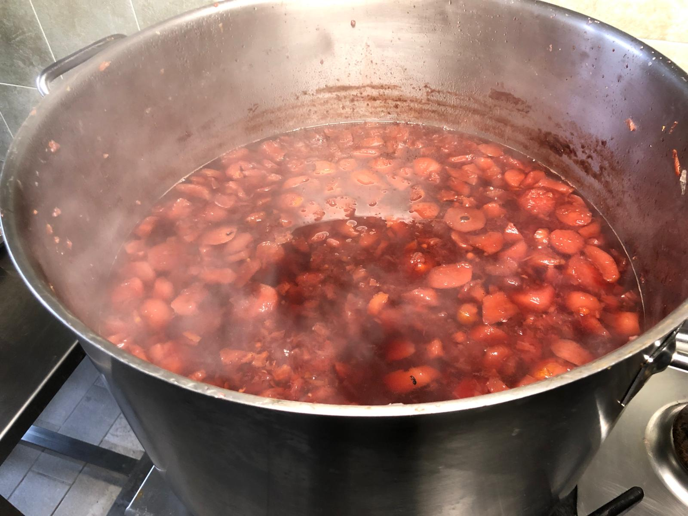
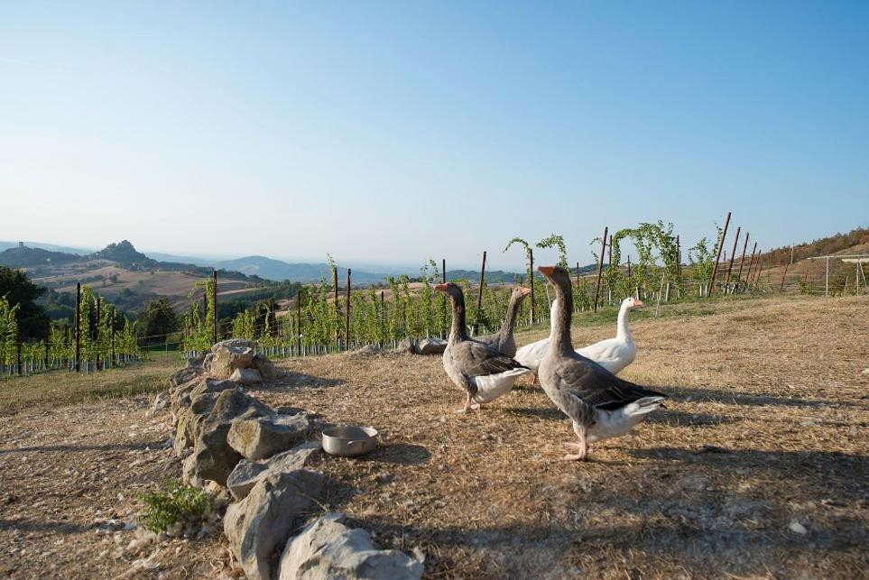
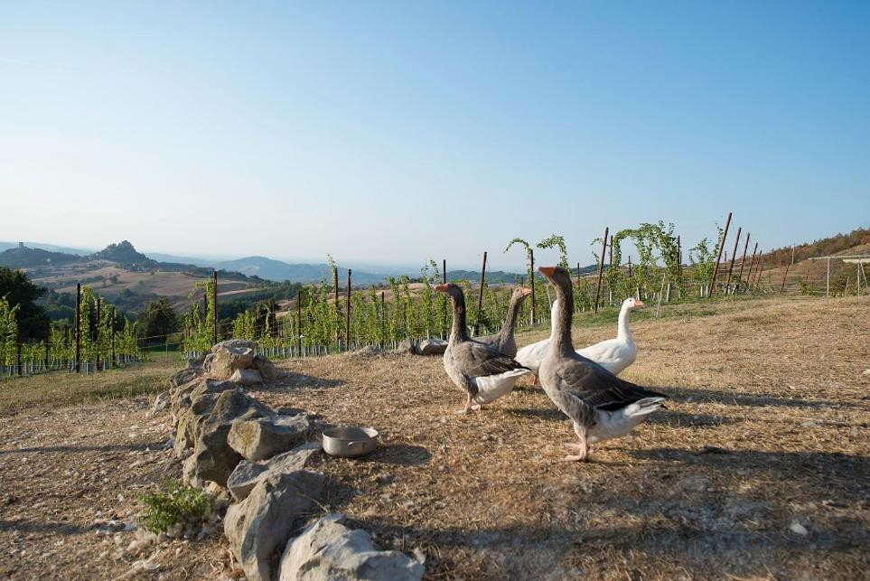
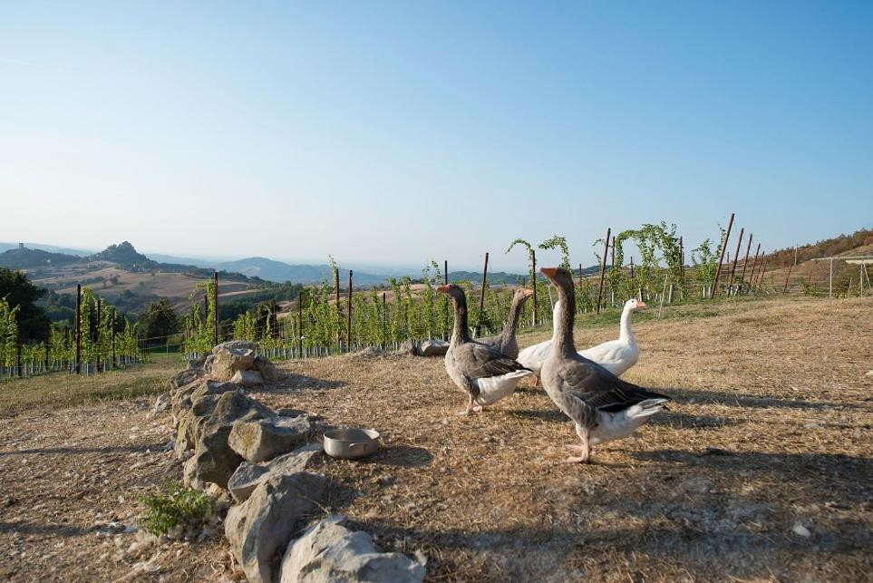

 
 

I nostri prodotti
Nell'Agriturismo Fattoria Branciana, siamo orgogliosi di offrire prodotti genuini e fatti in casa, coltivati direttamente nei nostri campi. Tutti i nostri prodotti sono preparati con ingredienti freschi e di stagione, per garantirvi il massimo della qualità.
Durante il vostro soggiorno potrete acquistare e gustare marmellate artigianali, sughi di pomodoro, vini locali, bevande fresche e tante altre delizie fatte con passione e cura.